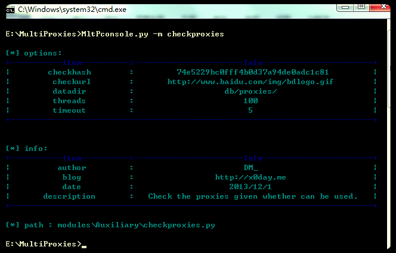
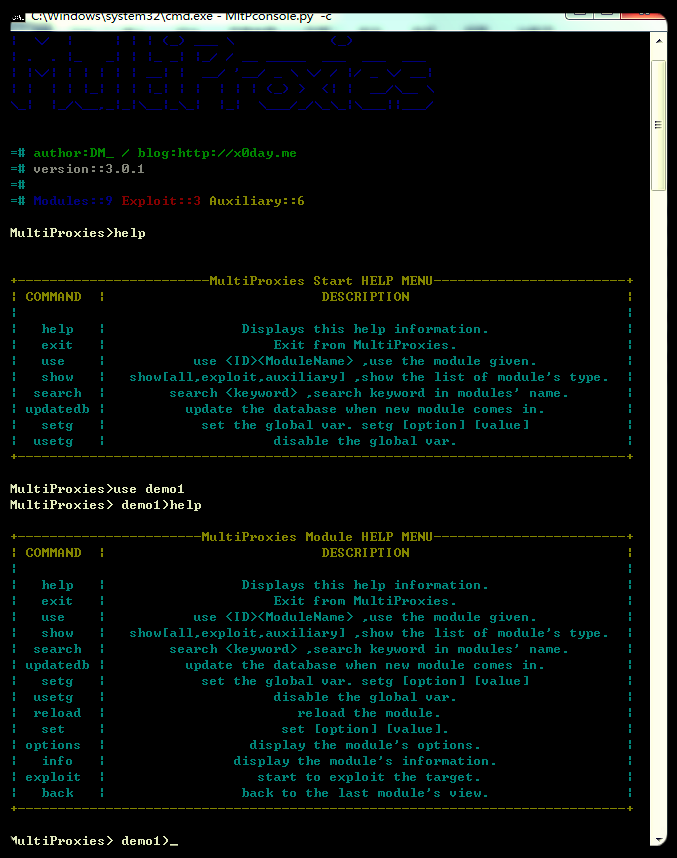

第一次使用
第一次使用时需要安装requests模块，
linux:
pip install requests
windows:
pip install requests
或：
easy_install requests
并且建议安装impacket模块。
直接调用

在这种方式下命令如下：
usage: MltPconsole.py [-h] [-c | -w] [-l | -s SEARCH | -m MODULE] [-o OPTIONS]
[-r] [-g GLOBALS]
optional arguments:
-h, --help show this help message and exit
-c, --console start from console.
-w, --web start from web.
-l, --listshow modules list.
-s SEARCH, --search SEARCHsearch module with keyword.
-m MODULE, --module MODULEthe module to use.
-o OPTIONS, --options OPTIONSset the modules options.
-r, --run start the module.
-g GLOBALS, --globals GLOBALSset the MltProxies globals
-
-l/--list
列出所有的模块，不需要参数
-
-s/--search
搜索符合关键词的模块,需要关键词作为参数
-
-m/--module
调用指定的模块，参数为模块ID或者模块名称(大小写不敏感)，如果不加其他参数(
-o/--options,-r/--run)并会显示指定模块的所需参数（options）和信息（info）。
-
-o/--options
设置模块参数，多个参数可以用&分隔，如果使用默认参数不必加此参数。
-
-g/--globals
设置默认全局参数(verbose,color,proxies)
-
-r/--run
运行模块
Console调用
使用MultiProxies –c命令进入，在未选择模块前有以下命令。
help 显示帮助信息
exit 退出主程序
use 加载模块
show 显示模块列表，可根据可选参数(all/exploit/auxiliary)显示不同的列表
search 搜索模块名称
updatedb 更新数据库
setg 设置全局参数
usetg 取消全局参数
在选择模块之后又会多出以下命令：
reload 重新加载模块(方便开发调试)
set 设置模块参数
options 显示模块参数
info 显示模块相关信息
exploit 运行模块
back 返回

上述命令功能和直接调用时相似，另外在console模式下可以执行系统命令， use 加载模块出错时会显示模块路径及出错信息，修改模块代码之后reload就可以了。
在运行模块时，如果模块调用了框架的多线程函数，则可以使用ctrl+c停止。
模块主程序在运行时如果模块未捕获键盘信号，那么框架也可以捕获ctrl+c键盘信号。